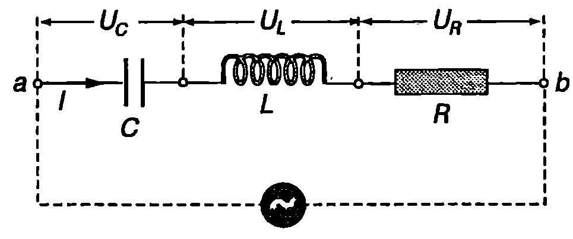
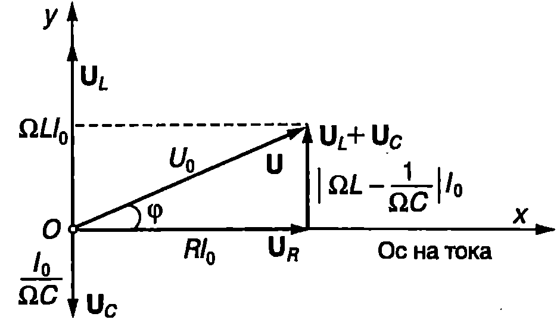
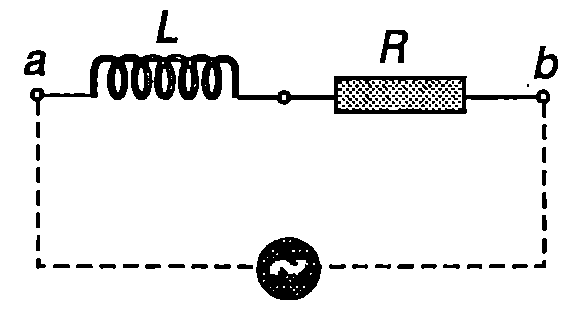
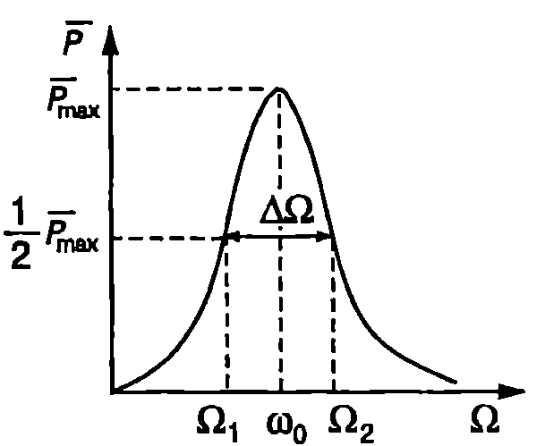
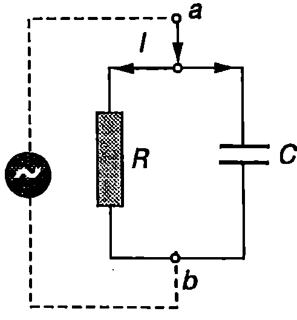
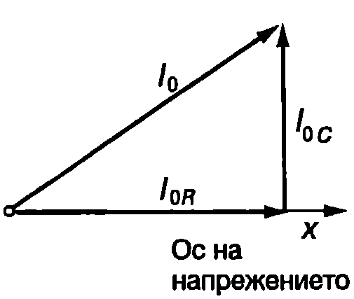

Принудени електромагнитни трептения
Направената аналогия между свободните механични трептения и свободните електромагнитни трептения може да се пренесе и върху принудените трептения. Ако в RLC-веригата се включи източник на променливо ЕДН (Фиг. \ref{fig:83.1}), във веригата възникват принудени електромагнитни трептения. Когато ЕДН на източника се изменя с времето по хармоничен (синусов) закон $$\varepsilon(t) = \varepsilon_0 \sin\Omega t, $$ след установяване на принудените трептения зарядът а върху кондензатора се изменя по аналогичен начин, както отклонението $x$ при принудените механични трептения: $$q = q_0 \sin(\Omega t + \varphi) $$ Кръговата честота $\Omega$ на принудените електромагнитни трептения равна на кръговата честота, с която се изменя електродвижещото напрежение на източника. Максималната стойност (амплитудата) до на заряда на кондензатора и фазовата разлика $\varphi$ между изменението на заряда $q$ и ЕДН $\mathcal E$ на източника се изразяват с уравнения, аналогични на уравнения \eqref{eq:74.5} и \eqref{eq:74.6} на стр. 131, в които трябва да се поставят собствената кръгова честота $\omega_0$ и коефициентът на затихване $\beta$ на трептящия кръг. Също така масата $m$ трябва да се замени с индуктивността 1 на намотката, а амплитудата $F_0$ на външната сила с амплитудата $\mathcal E_0$ на електродвижещото напрежение на източника. Токът във веригата и падовете на напрежението върху отделните и елементи също се изменят по синусов закон с кръгова честота $\Omega$.
И така, електромагнитните и механичните трептения се описват с едни и същи уравнения. Между величините и параметрите, които ги характеризират, съществува аналогия, която е обобщена в табл.83.1.
\begin{table}
\begin{tabular}{cc}
Механична величина & Електромагнитна величина\\
Отклонение $x$ & Заряд $q$ \\
Скорост $\displaystyle v = \frac{dx}{dt}$ & Електричен ток $\displaystyle I = \frac{dq}{dt}$ \\
Maca $m$ & Индуктивност $L$ \\
Коефициент на на еластичност $k$ & Реципрочна стойност на капацитета $1/C$ \\
Връщаща сила $F=-kx$ & Напрежение върху кондензатора $U = q/C$ \\
Сила на съпротивление $F_c = -bv$& Напрежение върху резистора $U_R = RI$ \\
Външна сила $F = F_0\sin\Omega t$ & ЕДН на източник $\mathcal E = \mathcal E_0 \sin\Omega t$ \\
Потенциална енергия $\displaystyle W = \frac{1}{2} kx^2$& Енергия на електричното поле $\displaystyle W_E = \frac{1}{2} \left(\frac{1}{C}\right) q^2$ \\
Кинетична енергия $\displaystyle E_k = \frac{1}{2} mv^2$ & Енергия на магнитното поле $W_B = \frac{1}{2} LI^2$ \\
\end{tabular}
Аналогия между величините, характеризиращи механичните трептения и електромагнитните трептения.
\label{table:83.1}
\end{table} Аналогията между механичните и електромагнитните трептения се използва за анализ на сложни механични системи. Прави се електричен модел на механичната система. В съответната електрическа верига експериментално се измерват токовете и напреженията в отделните клонове и елементи, което дава възможност да се направят изводи за поведението на механичната система (например да се определят отклоненията и скоростите на отделните й части).

`Фиг. 83.1`
Променлив ток
Електродвижещото напрежение на техническите електрически генератори се изменя по синусов закон и създадените от тях токове също са синусоидални. Синусоидалните токове имат голямо практическо значение, поради което ще им отделим специално място. По синусов закон се изменя токът в електрическата мрежа, както и токовете, използвани в промишлеността и в повечето електротехнически уреди и апарати. Прието е под променлив ток да се разбират преди всичко синусоидалните токове. Ще се спрем на основните закономерности в електрическа верига с променлив ток.
Активно, индуктивно и капацитивно съпротивление
Да разгледаме електрическа верига с променлив ток, която съдържа последователно свързани резистор със съпротивление $R$, намотка с индуктивност $L$ и кондензатор с капацитет $C$ (Фиг. \ref{fig:83.2}). През трите елемента тече един и същ променлив ток $$I = I_0 \sin \Omega t. $$ Ще определим напреженията върху резистора ($U_R$) намотката ($U_I$) и кондензатора ($U_c$) е известен токът $I$. Моментните стойности на тока $I$ и напрежението и върху резистора са свързани със закона на Ом $$U_R = RI = R I_0 \sin \Omega t = U_{0R} \sin \Omega t, $$ където $$U_{0R} = RI_0 $$ е максималната стойност (амплитудата) на напрежението върху резистора.
Тъй като намотката е идеална (нейното съпротивление е нула), трябва приложеното върху нея напрежение изцяло $U_L$ да се компенсира от самоиндуцираното напрежение $\varepsilon_L$ (в противен случай през намотката ще тече безкрайно голям ток), т.е. трябва да е в сила равенството $$U_L + \varepsilon_L =U_L -Ld/dt=0.$$

`Фиг. 83.2`
От него изразяваме напрежението върху намотката $$\begin{aligned} U_L &= L \frac{dI}{dt} = L\Omega I_0 \cos \Omega t = \ &=U_{0L} \sin\left(\Omega t+ \frac{\pi}{2}\right), \end{aligned} $$ където $$U_{0L} = \Omega LI_0 $$ е амплитудата на напрежението.
Напрежението $U_c$ и зарядът а върху кондензатора са свързани с равенството $U_c = q/C$ От друга страна, токът е равен на скоростта, с която се изменя зарядът върху кондензатора: $l = d/dt (q)$ Интегрираме последното уравнение и получаваме закона, по който се изменя зарядът $q$: $$q = \int I dt + q_1 = I_0 \int \sin \Omega t dt + q_1 = -\frac{I_0}{\Omega} \cos \Omega t + q_1$$ Константата $q_1$ има физически смисъл на постоянен заряд върху кондензатора. Такъв заряд би имало, ако например във веригата освен източник на променливо ЕДН е включен и източник на постоянно напрежение. Ние няма да разглеждаме този случай и ще положим $q_1 = 0$ Тогава $$\begin{aligned} U_C &= \frac{q}{C} = -\frac{I_0}{\Omega C} \cos \Omega t = \ &= U_{0c} \sin(\Omega t - \frac{\pi}{2}) \end{aligned} $$ където $$U_{0C} = \frac{1}{\Omega C} I_0 $$ е амплитудата на напрежението върху кондензатора.
От уравнения \eqref{eq:83.4}, \eqref{eq:83.6} и \eqref{eq:83.8} се вижда, че: 1. напреженията върху резистора ($U_R$) намотката ($U_L$) и кондензатора ($U_C$) се изменят по синусов закон със същата кръгова честота 2, както токът във веригата; 2. напрежението върху резистора е във фаза с тока, напрежението върху намотката изпреварва по фаза тока с $\pi/2$ а напрежението върху кондензатора изостава по фаза от тока с $\pi/2$ т.е. $U_L$ и $U_c$ са в противофаза.
Сравняването на уравнения \eqref{eq:83.5}, \eqref{eq:83.7} и \eqref{eq:83.9} показва, че между амплитудите на тока и напреженията върху отделните елементи от веригата съществува връзка, аналогична на закона на Ом при постоянните токове ($U = RI$). Величините $$X_L = \frac{U_{0L}}{I_0} = \Omega L; $$ $$X_C = \frac{U_{0C}}{I_0} = \frac{1}{\Omega C}, $$ равни на отношението на амплитудите на напрежението и тока, подобно на съпротивлението А, се измерват в омове. Наричат се индуктивно съпротивление на намотката ($X_L$) и капацитивно съпротивление на кондензатора ($X_C$).
Съпротивлението $R$ на резистора се нарича активно съпротивление, тъй като при протичане на ток в резистора се отделя количество топлина. Индуктивното и капацитивното съпротивление се наричат още реактивни съпротивления. Идеалната намотка и идеалният кондензатор имат само реактивно съпротивление: при протичане на ток в тях не се отделя топлина.
За разлика от активното съпротивление, реактивните съпротивления зависят от честотата. От уравнения \eqref{eq:83.10} и \eqref{eq:83.11} следва, че при намаляване на кръговата честота 2 индуктивното съпротивление намалява, а капацитивното съпротивление нараства. В граничния случай, когато $\Omega \to 0$, $X_C\to\infty$ и $X_L\to0$, което отразява известните факти, че постоянен ток не преминава през кондензатор, а идеална намотка ($R = 0$) не оказва съпротивление на постоянен ток, тъй като тогава в нея не се индуцира ЕДН. Във верига с променлив ток намотка и кондензатор имат противоположно поведение. При ниски кръгови честоти реактивното съпротивление на кондензатора е голямо, а на намотката малко. Във високочестотната област е обратно: кондензаторът има малко реактивно съпротивление, а намотката е с голямо съпротивление. Бихме могли обобщено да кажем, че намотките пропускат ниските честоти и задържат високите честоти, докато кондензаторите, обратно, пропускат високите честоти и задържат ниските честоти. Тези свойства на кондензаторите и намотките се използват в електрическите филтри.
Импеданс
Моментната стойност $U$ на напрежението между точките а и в (Фиг. \ref{fig:83.2}) е равна на сумата от моментните стойности на напреженията върху резистора ($U_R$), намотката ($U_L$) и кондензатора ($U_C$): $$U = U_R + U_L + U_C $$ Тъй като между напреженията има фазови разлики, амплитудата $U_0$ на напрежението $U$ не е равна на сумата от амплитудите на напреженията върху отделните последователно свързани елементи. Ще използваме метода на векторните диаграми, за да определим $U_0$. Представяме тока $I$ и напреженията $U_R$. $U_L$ и $U_C$ с вектори, които се въртят с ъглова скорост $\Omega$ около началото $O$ на координатната система $xy$. Нека в даден момент векторът на тока да е насочен по оста $x$. Ще наречем оста $x$ ос на тока. През последователно свързаните елементи на веригата от Фиг. \ref{fig:83.2} тече един и същ ток, затова можем да определяме посоките на векторите $\vec U_R$, $\vec U_L$, и $\vec U_C$ спрямо оста на тока: тя се задава от фазовата разлика между тока и съответното напрежение. Напрежението върху резистора е във фаза с тока, поради което векторът $\vec U_R$ е насочен по оста на тока (Фиг. \ref{fig:83.3}). Неговият модул е равен на амплитудата на напрежението: $U_{0R} = RI_0$. Напрежението върху намотката изпреварва по фаза тока с $\pi/2$, затова на векторната диаграма векторът $\vec U_L$, с модул $U_{0L} = \Omega LI_0$, сключва ъгъл $\pi/2$ с оста на тока. Ъглите се отчитат от оста на тока, като за положителна се приема посоката, обратна на посоката на движение на часовата стрелка. По аналогичен начин се построява векторът $\vec U_C$ с модул $\displaystyle U_{0C} = \frac{1}{\Omega C} I_0$, който сключва ъгъл $- \pi/2$ с оста на тока. Напрежението между точките а и в се изразява с вектора $\vec U = \vec U_R + (\vec U_L + \vec U_C)$ чийто модул се определя с помощта на питагоровата теорема от правоъгълния триъгълник на Фиг. \ref{fig:83.3}:

`Фиг. 83.3`
$$U_0 = I_0 \sqrt{R^2 + \left(\Omega L - \frac{1}{\Omega C}\right)^2} = I_0Z $$ Величината $$Z = \frac{U_0}{I_0} = \sqrt{R^2 + \left(\Omega L - \frac{1}{\Omega C}\right)^2} = \sqrt{R^2 + X^2} $$ се нарича импеданс на веригата. Импедансът има две съставящи: активно съпротивление $R$ и реактивно съпротивление $$X = \Omega L - \frac{1}{\Omega C}$$ Ъгълът $\varphi$, който векторът $\vec U$ сключва с оста на тока (Фиг. \ref{fig:83.3}), е равен на фазовата разлика между напрежението $U$ и тока $I$: $$\cos \varphi = \frac{U_{0R}}{U_0} = \frac{R I_0}{Z I_0} = \frac{R}{Z}. $$
Пример 83.1
Намотка с активно съпротивление $R = 10\ \Omega$ е включена към електрическата мрежа ($\nu = 50$ Hz) Определете индуктивността $L$ на намотката, ако фазовата разлика между тока и напрежението върху намотката $\pi/3 $. \end{psexample}
Решение
Намотка с активно съпротивление може да се разглежда като идеална намотка (без активно съпротивление), последователно на която е свързан резистор със съпротивление R (Фиг. \ref{fig:83.4}). Във формула \eqref{eq:83.15} заместваме $\varphi = \pi/3$ и получаваме $Z = 2R$, където $Z$ e импедансът на веригата. Реактивното съпротивление на веригата е $X = X_L = \Omega L = 2\pi \nu L$ Заместваме $Z$ и $X$ във формулата за импеданса $Z = \sqrt{R^2 + X^2}$ и определяме индуктивността на намотката: $$L = \frac{R \sqrt{3}}{2\pi v} = 55~\mathrm{mH}$$

`Фиг. 83.4`
Мощност на променлив ток
Променливите токове са квазистационарни (вж. 961). За моментните стойности на величините, които ги характеризират, са в сила същите зависимости, както при постоянните токове. Моментната мощност $P$ на променлив ток се изразява със същото уравнение, както мощността на постоянния ток: $$P = UI, $$ където $U$ и $I$ са моментните стойности на напрежението и тока в разглежданата част от веригата: например между точките $a$ и $b$ от веригата, чиято схема е показана на Фиг. \ref{fig:83.2}.
Моментната мощност е величина, която непрекъснато се изменя с течение на времето (по периодичен закон), и от нея не може непосредствено да се получи представа каква енергия консумира веригата при продължително протичане на променлив ток. За да се определи консумираната електроенергия, използва се величината средна мощност на променливия ток, която се получава от моментната мощност след осредняване за продължителен интервал от време. Тъй като $U$ и $I$ са периодични функции, достатъчно е осредняването да се извърши за време, равно на периода $T$. Заместваме моментните стойности на тока \eqref{eq:83.3} и напрежението \eqref{eq:83.6} в уравнение \eqref{eq:83.16}: $$P= I_0 \sin(\Omega t) U_0 \sin(\Omega t+ \varphi),$$ където $\varphi$ е фазовата разлика между $I$ и $U$. С помощта на тригонометричното тъждество (А.48) (вж. част 1, стр.234) преобразуваме горното равенство във вида $$P = U_0 I_0 \sin^2 (\Omega t) \cos \varphi + U_0 l_0 \sin \Omega t \cos \Omega t \sin\varphi.$$ Средната стойност на $\sin^2 \Omega t$ e 1/2, а средната стойност на $\sin\Omega t \cos\Omega t= (1/2) \sin 2\Omega t$ е нула. Следователно $$\overline P = 1/2 U_0I_0 \cos \varphi. $$ Величината $\cos\varphi$ се нарича фактор на мощността. Следователно средната мощност на тока в променливотокова верига зависи не само от амплитудите на напрежението ($U_0$) и тока ($I_0$), но и от фазовата разлика между тях. Тази зависимост се изразява с фактора на мощността $\cos\varphi$. Ако реактивното съпротивление на веригата е нула, тогава импедансът е равен на активното съпротивление ($Z = R$) и съгласно с уравнение \eqref{eq:83.15} $\cos\varphi = R/Z = 1$. Такъв е случаят, когато например веригата съдържа само резистор със съпротивление $R$. Тогава средната мощност на тока през резистора е $$\overline P = \frac{1}{2} U_0I_0 =U_{ef} I_{ef},$$ където величините $$U_{ef} = \frac{U_0}{\sqrt{2}} \text{ и } I_{ef} = \frac{I_0}{\sqrt{2}} $$ се наричат ефективни стойности на напрежението ($U_{ef}$) и на тока ($I_{ef}$). Ефективните стойности са равни на големината на тока и напрежението на такъв постоянен ток, който отделя в дадения резистор мощност, равна на средната мощност на променливия ток.
Ще отбележим, че уредите за измерване на променлив ток (цифрови и стрелкови амперметри и волтметри) показват ефективните стойности на тока и напрежението.
Ако веригата има само реактивно съпротивление ($R = 0$) тогава съгласно с уравнения \eqref{eq:83.15} и \eqref{eq:83.17} $\cos \varphi = 0$ $\overline P = 0$. Следователно средната мощност на тока през идеална намотка и идеален кондензатор, както и във верига, съдържаща само такива елементи, е равна на нула. Протичането на ток е свързано само с периодични изменения на енергията: енергията на електричното поле на кондензаторите се преобразува в енергия на магнитното поле на тока през намотките и обратно, като едновременно с това се извършва непрекъснат обмен на енергия между източника и веригата. Само при наличие на елементи с активно съпротивление част от електричната енергия на източника необратимо се преобразува във вътрешна енергия и в тези елементи се отделя топлина.
Пример 83.2
Волтметър, който е включен към електрическата мрежа, измерва напрежение 220 V. Определете амплитудата на това напрежение. \end{psexample}
Решение
Волтметърът измерва ефективната стойност $U_{ef}$ на напрежението. Амплитудата на напрежението е $$U_0 = U_{ef}\sqrt{2} = 311~\mathrm{V}$$
Резонанс
Нека изменяме кръговата честота $\Omega$ на източника от електрическата верига, показана на Фиг. \ref{fig:83.2}, при постоянна амплитуда $U_0$ на напрежението между точките а и в. Ще представим средната мощност на тока във веригата като функция на 2. Заместваме $\cos\varphi = R/Z$ и $I_0 = U_0/Z$ в уравнение \eqref{eq:83.17} и за средната мощност на тока получаваме $$\bar P = \frac{1}{2}\frac{U_0^2 R}{Z^2} = \frac{1}{2}\frac{U_0^2 R}{R^2+(\Omega L - \frac{1}{\Omega C})^2} $$ където сме отчели уравнение \eqref{eq:83.14}. От уравнение \eqref{eq:83.19} следва, че средната мощност е максимална ($\displaystyle \bar P_{\max} = \frac{U_0^2}{2R}$) при кръгова честота, за която реактивното съпротивнение е равно на нула. От условието $\Omega L - 1/\Omega C = 0$ определяме кръговата честота, при която средната мощност е максимална: $$\Omega_p = \omega_0 = \frac{1}{\sqrt{LC}}. $$ По аналогия с механичните трептения, явлението се нарича резонанс: консумираната от веригата електрична мощност е максимална при кръгова честота на източника, равна на кръговата честота на свободните електромагнитни трептения в идеален трептящ кръг, съставен от намотка и кондензатор, които имат същите стойности на индуктивността $L$ на капацитета $C$, както намотката и кондензатора от разглежданата електрическа верига. Честотата $\Omega_p$ се нарича резонансна честота.
Графиката на функцията $\overline P(\Omega)$ се нарича резонансна крива (Фиг. \ref{fig:83.5}). Кръговите честоти $\Omega_1$ и $\Omega_2$, при които средната мощност е равна на половината от максималната мощност, определят ширината на резонансната крива $\Delta\Omega = \Omega_2 - \Omega_1$. Доказва се (вж. пример 83.3), че $$\Delta\Omega = \frac{R}{L}. $$

`Фиг. 83.5`
Следователно, ако се намалява активното съпротивление $R$ на веригата, максималната мощност нараства, а ширината на резонансната крива намалява, т.е. резонансът става по-силно изразен.
Забележка. При изменение на кръговата честота 2 на източника амплитудите на заряда ($q_0$) и на напрежението ($U_{0C}$) на кондензатора също преминават през максимум. Резонансните криви $q_0(\Omega)$ и $U_{0C}(\Omega)$ имат същия вид, както резонансните криви на амплитудата $A(\Omega)$ при принудените механични трептения (вж. Фиг. \ref{fig:74.2} на стр.133). В този случай резонансната честота зависи от коефициента на затихване на електромагнитните трептения и се изразява с формула \eqref{eq:74.9}: $$\Omega_p = \sqrt{\omega_0^2 - 2\beta^2}.$$
Пример 83.3
Докажете, че ширината на резонансната крива на средната мощност на променливия ток се изразява с уравнение \eqref{eq:83.21}. Определете $Q$-фактора на веригата, ако са известни резонансната честота и ширината на резонансната крива. \end{psexample}
Решение
В уравнението за средната мощност \eqref{eq:83.19} полагаме $\displaystyle \overline P = \frac{P_{\max}}2 = \frac{U_0^2}{4R}$ и получаваме биквадратното уравнение $$\left(\Omega L - \frac{1}{\Omega L}\right)^2 = R^2$$ за кръговата честота $\Omega$. То е еквивалентно на следните две квадратни уравнения: $$\Omega L - \frac{1}{\Omega L} = R\text{ и } \Omega L - \frac{1}{\Omega L} = -R$$ Всяко от тези уравнения има по един положителен корен (отрицателните корени нямат физичен смисъл): $$\Omega_1 = \frac{-\frac{R}{L} + \sqrt{(\frac{R}{L})^2 + \frac{4}{LC}}}{2}; \quad \Omega_2 = \frac{\frac{R}{L} + \sqrt{(\frac{R}{L})^2 + \frac{4}{LC}}}{2}.$$ Следователно: $\Delta\Omega = \Omega_2 - \Omega_1 = R/L$.
Относителната ширина на резонансната крива е $$\frac{\Delta \Omega}{\Omega_p} = \frac{\Delta \Omega}{\omega_0} = \frac{R/L}{(1/\sqrt{LC})} = R\sqrt{\frac{C}{L}} = \frac{1}{Q},$$ където $\displaystyle Q = \frac{1}{R} \sqrt{\frac{L}{C}}$ е доброкачествеността на $RLC$-веригата. Ако експериментално се измери резонансната крива на средната мощност, от нейната ширина $\Delta\Omega$ може да се определи доброкачествеността на електрическата верига по формулата $$Q = \frac{\Omega_p}{\Delta\Omega}. $$
Колкото по-тясна е резонансната крива, толкова по-голям е Q-факторът.
Поражения от електричен ток
Пораженията върху човешкия организъм, предизвикани от протичане на електричен ток, зависят главно от два фактора: големината на тока и пътя, по който този ток тече. Особено опасни са случаите, когато токът засяга мозъка или сърцето.
При зададено външно напрежение стойността на тока се определя от електричния импеданс $Z$ на тялото. Човешкото тяло, освен активно съпротивление $R$, има и реактивно съпротивление $X$ с капацитивен характер. По отношение на променливия ток тялото може да се разглежда като успоредно свързани резистор и кондензатор (Фиг. \ref{fig:83.6}). При такова свързване общият ток е сума от токовете през резистора и кондензатора, т.е. той е по-голям от тока $I = U/R$ който би протекъл през резистора, ако приложеното напрежение е постоянно.

`Фиг. 83.6`

`Фиг. 83.7`
Съпротивлението $R$ на тялото в най-голяма степен зависи от състоянието на кожата и може да се изменя в много широки граници. При суха кожа то може да достигне 1000 k$\Omega$, докато влажната кожа намалява съпротивлението до 1 k$\Omega$. Наличието на драскотини и рани по кожата води до допълнително намаляване на съпротивлението, тъй като кръвта и вътрешните тъкани съдържат свободни йони и имат много малко електрично съпротивление.
Токове с големина над 10 mA предизвикват рязко съкръщаване на мускулите, при което може да се окаже, че човек не е в състояние сам да се освободи от проводника, който случайно е докоснал. Възможно е спиране на дишането. Първата помощ включва освобождаване на пострадалия от електричното напрежение, като се вземат мерки помагащият да не попадне също под напрежение. След това се прилага изкуствено дишане.
Токове с големина над 70 mA, засягащи сърцето, предизвикват неконтролируеми хаотични съкращения на сърдечния мускул, наречени фибрилации. Фибрилациите нарушават кръвообръщението и могат да доведат до смърт, ако не бъдат своевременно прекратени. При пряк контакт със сърцето, например чрез имплантирани електроди, фибрилации могат да настъпят дори при много слаби токове (от порядъка на $20 \mu\mathrm{A}$).
Пример 83.4
Човек попада под постоянно напрежение $U = 120$ V Определете съпротивлението $R$ на тялото му, ако през него протича ток $I = 6$ mA. Определете капацитета $C$ на човека, ако променливо напрежение с честота $\nu = 50$ Hz и ефективна стойност $U_\text{ef} =120$ V поражда два пъти по-голям ток ($I_\text{ef} =12$ mA). \end{psexample}
Решение
Активното съпротивление на тялото e $R = U/I = 20$ k$\Omega$. Моментната стойност $I$ на пълния ток е сума от моментните стойности на токовете през резистора ($I_R$) и кондензатора ($I_C$) Върху успоредно свързаните резистор и кондензатор е приложено едно и също напрежение, а между токовете съществува фазова разлика. За да определим амплитудата (или ефективната стойност) на пълния ток $I$, ще използваме метода на векторните диаграми. Посоката на векторите на тока ще определяме спрямо вектора на напрежението (ос на напрежението), което в случая е еднакво за двата елемента. От векторната диаграма (Фиг. \ref{fig:83.7}), като отчетем уравнения \eqref{eq:83.5} и \eqref{eq:83.9}, получаваме $$l_0 = \sqrt{l_{0R}^2 + l_{0C}^2} = U_0 \sqrt{\frac{1}{R^2} + \Omega^2 C^2}$$ откъдето $\displaystyle C = \frac{1}{2\pi\nu} \sqrt{\left(\frac{I_0}{U_0}\right)^2 - \frac{1}{R^2}} = 0,!28~\mathrm{\mu F}.$
Задачи
-
Намотка с индуктивност $L = 100$ mH е включе на в електрическа верига с честота $\nu = 200$ Hz. Факторът на отделената в намотката мощност $\cos \varphi = 0,!1$. Определете активното съпротивление на намотката.
-
Към електрическата мрежа ($U_\text{ef} =220$ V, $\nu = 50$ Hz) са включени последователно кондензатор с капацитет $C = 6$ mF и идеална намотка с индуктивност $L = 0,!2$ H. Определете ефективната стойност на тока във веригата и фазовата разлика между тока и напрежението.
-
Определете импеданса $Z$ и фактора на мощността $\cos\varphi$ на електрична верига, съдържаща кондензатор с капацитет $C$, намотка с индуктивност $L$ и резистор със съпротивление $R$. Трите елемента са свързани успоредно.
Указание. Начертайте схема на веригата. Върху трите елемента е подадено едно и също напрежение. Постройте векторна диаграма на токовете, подобна на диаграмата от Фиг. \ref{fig:83.7}.